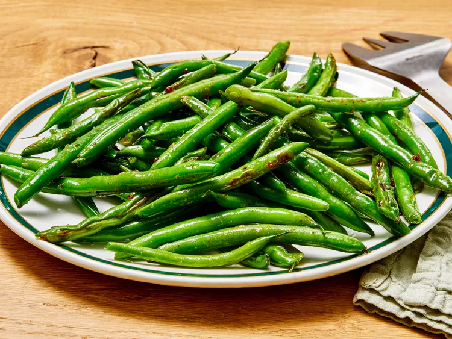

Sauteed Green Beans

Elevate Your Plate with Sautéed Green Beans!
Transform ordinary green beans into a culinary sensation with our sautéed green beans recipe. Crisp, vibrant, and bursting with flavor, each bite is a celebration of freshness.
Ingredients
- 1 1/2 tablespoons olive oil
- 3/4 pound fresh green beans, trimmed
- 1/2 teaspoon onion salt
- 1/2 teaspoon garlic salt
- 1/2 teaspoon garlic powder
- freshly ground pepper to taste
Steps
- Gather all ingredients.
- Heat olive oil in a skillet over medium heat.
- Add green beans, onion salt, garlic salt, garlic powder, and black pepper to skillet.
- Cook and stir until desired tenderness is reached, 5 to 10 minutes.
- Serve hot and enjoy!